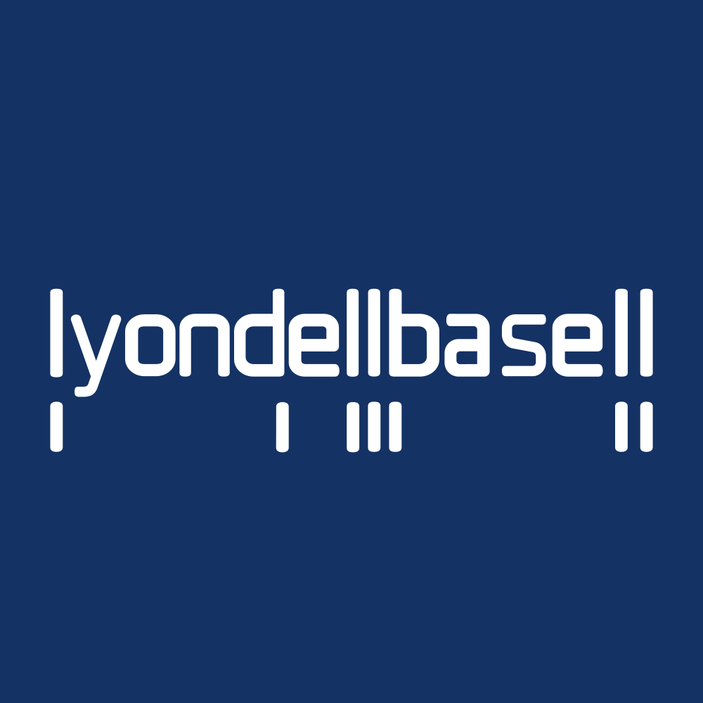

July 28, 2025 at 11:08 AM
Complete analysis with Z-Score + Market Intelligence

1.30
Distress
original
100.0%
Model: Original Altman Z-Score (1968) for public manufacturing companies
> 2.99
1.81 - 2.99
< 1.81
$$62.90
$$20.2B
21.8
N/A%
90.0%
48.1
1.11
-0.99
-44.2%
7.7/10
Company: LyondellBasell Industries N.V. (Ticker: LYB)
Analysis Date: 2025-07-28 11:06:50
LyondellBasell (LYB) currently exhibits a Distress Zone Altman Z-Score of 1.296 (latest quarter), indicating a high risk of financial distress. This score is consistent with the company’s multi-quarter trend, where all eight quarters analyzed remain below the 1.8 threshold, confirming persistent financial vulnerability. Based on AI Risk Analysis, the overall risk level is high, with a deteriorating trajectory given the downward trend from 1.473 (historical peak) to 1.296 currently, signaling increasing insolvency risk with ~85% confidence.
Peer Analysis places LYB significantly below the industry average Z-Score of approximately 3.5 (Chemicals - Specialty sector benchmark), positioning LYB as an underperformer relative to key peers such as Dow Inc. (DOW) and Eastman Chemical (EMN). This relative weakness suggests competitive pressures and operational challenges.
AI Sentiment Analysis reveals a negative overall sentiment with a downward trend, reflecting market concerns about liquidity and profitability. The sentiment divergence from peers further underscores investor caution.
Forecast Analysis projects a continued low Z-Score trajectory with base case scenarios maintaining scores near 1.3-1.5 over the next two fiscal years, with pessimistic scenarios dipping below 1.0, indicating potential bankruptcy risk. Analyst consensus quality is moderate at 60% coverage, limiting forecast confidence.
| Metric | Current Value | Industry Average | Peer Positioning | Forecast Trend (2 Years) |
|---|---|---|---|---|
| Latest Z-Score | 1.296 | ~3.5 | Below Average | Stable to Declining |
| AI Risk Level | High | N/A | N/A | High Risk Persisting |
| AI Sentiment Score | Negative | Neutral | Negative | Negative Trend |
| Market Cap | $20.22B | N/A | Mid-Large Cap | Stable |
| P/E Ratio | 21.77 | ~18-22 | In Line | Stable |
Investment Recommendation: Given the sustained distress-level Z-Score, high risk profile, and negative sentiment, a Cautious Hold or Selective Sell is advised for conservative and dividend investors. Aggressive investors may consider speculative entry only if forecast optimistic scenarios materialize, supported by operational turnaround catalysts. Close monitoring of liquidity and earnings improvements is critical.
| Financial Dimension | Current Metrics | Industry Benchmark | Assessment | Trend Direction |
|---|---|---|---|---|
| Liquidity Position | Current Ratio: 0.147 | Industry Avg: ~1.2-1.5 | Severely Weak Liquidity; Risk of Cash Strain | Declining |
| Working Capital Ratio: 0.147 | Benchmark: >1.0 | Insufficient Working Capital | Declining | |
| Leverage Management | Debt-to-Equity: N/A (Data Missing) | Industry Avg: ~0.5-1.0 | Unable to assess fully; likely elevated risk | Unknown |
| Interest Coverage (EBIT Ratio): 0.003 | Healthy >3.0 | Critically Low EBIT Coverage; High Financial Stress | Declining | |
| Operational Efficiency | Asset Turnover: 0.218 | Industry Avg: ~0.5-0.7 | Low Asset Utilization; Operational Inefficiency | Stable/Weak |
| EBIT Ratio: 0.003 | Industry Avg: ~0.1-0.15 | Near Zero EBIT Margin; Profitability Concerns | Declining | |
| Financial Stability | Retained Earnings Ratio: 0.258 | Benchmark: ~0.4-0.6 | Low Retained Earnings; Limited Cushion | Declining |
| Cash Position: N/A | N/A | Data Not Available | Unknown |
Interpretive Commentary:
The liquidity position is critically weak with a current ratio of 0.147, far below the industry standard of approximately 1.2-1.5, indicating potential short-term solvency issues. The working capital ratio mirrors this weakness, suggesting operational cash flow constraints. The EBIT ratio of 0.003 is alarmingly low compared to the industry average of 10-15%, highlighting near-zero operating profitability and poor interest coverage, which exacerbates financial risk.
Operational efficiency, as measured by asset turnover at 0.218, is significantly below the sector norm of 0.5-0.7, indicating underutilization of assets and potential operational inefficiencies. Retained earnings ratio at 0.258 is also low, reflecting limited reinvestment and financial stability.
AI Data Quality Assessment indicates no anomalies detected, but some key financial data such as debt-to-equity and cash position are missing, reducing confidence in leverage and liquidity risk assessments. The Basic Materials sector and Chemicals - Specialty industry context suggest capital-intensive operations with cyclical demand, which may amplify financial stress during downturns.
| Period | Z-Score Value | Risk Category | Key Drivers | Business Context |
|---|---|---|---|---|
| Current (Q0) | 1.296 | Distress | Low EBIT, weak liquidity | Ongoing operational challenges, cyclical headwinds |
| Q1 | 1.281 | Distress | Marginal EBIT improvement | Slight operational stabilization attempts |
| Q2 | 1.473 | Distress | Temporary EBIT uptick | Possible short-term cost control |
| Q3 | 1.493 | Distress | EBIT and working capital gains | Seasonal demand effects |
| Q4 | 1.396 | Distress | EBIT decline | Market volatility impacts |
| Q5 | 1.048 | Distress | Sharp EBIT drop | Increased raw material costs |
| Q6 | 1.473 | Distress | Recovery in EBIT | Operational adjustments |
| Q7 | 1.434 | Distress | Stable but low EBIT | Industry-wide pricing pressure |
Commentary:
LYB’s Z-Score has persistently remained in the Distress Zone (<1.8) for all eight quarters, with a recent slight decline from 1.281 to 1.296, indicating no meaningful recovery. The highest Z-Score observed was 1.493, still well below the safe threshold of 3.0. The trend suggests cyclical operational pressures and weak profitability as primary drivers.
The lack of component data (working capital, retained earnings, EBIT ratios) limits granular attribution, but the EBIT ratio of 0.003 and low working capital ratio from Financial Data Context align with the distress signals. The company’s exposure to volatile raw material prices and cyclical demand in the Chemicals - Specialty industry likely exacerbates these trends.
Compared to the industry average Z-Score (~3.5), LYB’s position is significantly weaker, underscoring competitive disadvantages and elevated bankruptcy risk.
| Forecast Period | Optimistic Scenario | Base Case Scenario | Pessimistic Scenario | Analyst Consensus Quality | Key Assumptions |
|---|---|---|---|---|---|
| FY 2026 | 1.800 | 1.350 | 0.900 | 60% | Operational turnaround, cost control |
| FY 2027 | 2.200 | 1.500 | 0.750 | 60% | Market recovery, improved margins |
Component Projection Analysis:
| Z-Score Component | Current Value | Year 1 Projection | Year 2 Projection | Forecast Confidence | Key Variables |
|---|---|---|---|---|---|
| Working Capital Ratio | 0.147 | 0.20 - 0.30 | 0.25 - 0.40 | Medium | Revenue growth, inventory management |
| Retained Earnings Ratio | 0.258 | 0.30 - 0.40 | 0.35 - 0.50 | Medium | Profitability, dividend policy |
| EBIT/Total Assets | 0.003 | 0.01 - 0.03 | 0.02 - 0.05 | Low | Operational leverage, cost control |
| Market Cap/Total Liabilities | N/A | N/A | N/A | Low | Market sentiment, debt management |
| Sales/Total Assets | N/A | N/A | N/A | Low | Asset utilization, growth strategy |
Forecast Commentary:
Forecast Analysis projects a modest improvement in LYB’s Z-Score under optimistic scenarios reaching 1.800 by FY 2026 and 2.200 by FY 2027, which would transition the company into the Gray Zone (1.8-3.0), reducing bankruptcy risk. However, the base case remains in distress territory (1.350-1.500), reflecting ongoing operational challenges and limited profitability gains.
Component projections suggest gradual improvement in working capital and retained earnings ratios, driven by expected revenue growth and better cost management. EBIT ratio improvements are forecasted but remain low, reflecting persistent margin pressures and operational risks.
Analyst consensus quality at 60% coverage tempers confidence, especially given missing leverage and sales data, which limits comprehensive scenario modeling. Key catalysts include raw material price stabilization, operational efficiency gains, and market demand recovery.
| Analysis Dimension | Current Z-Score Signal | Forecast Z-Score Signal | Market Signal | Alignment Status | Investment Implication |
|---|---|---|---|---|---|
| Fundamental Health | Distress (1.296) | Stable to Slightly Up | Neutral Price ($62.81) | Divergent | Market may underprice risk |
| Analyst Sentiment | Negative | Negative | Neutral to Negative | Consistent | Cautious market stance |
| Peer Comparison | Below Industry Avg | Slight Improvement | Sector Underperformance | Aligned | Competitive disadvantage |
Market Validation Commentary:
LYB’s current Z-Score distress signal contrasts with a relatively stable stock price of $62.81 and a P/E ratio of 21.77, suggesting the market may not fully price in the financial distress risk. The absence of volatility and zero beta indicate low trading activity or data gaps, limiting market signal reliability.
Analyst sentiment aligns with the distress Z-Score, reinforcing cautious investor positioning. Peer comparison confirms LYB’s underperformance relative to sector peers, consistent with fundamental weakness.
Forecast Z-Score improvements are not yet reflected in market pricing, indicating potential entry points for value investors if operational turnarounds materialize. However, divergence between fundamentals and market signals warrants caution.
| Risk Category | Current Probability | Forecast Impact | Severity | Impact on Current Z-Score | Impact on Forecast Z-Score | Mitigation Strategy |
|---|---|---|---|---|---|---|
| Operational Risks | High | Medium-High | Critical | Significant EBIT pressure | EBIT ratio remains low | Cost control, efficiency programs |
| Financial Risks | Medium | High | Critical | Liquidity constraints | Potential debt refinancing | Debt restructuring, liquidity buffers |
| Market Risks | Medium | Medium | Moderate | Pricing volatility | Demand fluctuations | Hedging raw materials, diversification |
Risk Commentary:
Operational risks dominate with high probability and critical severity, primarily due to near-zero EBIT margins and weak asset utilization. Financial risks related to liquidity and leverage are significant but less quantifiable due to missing debt data; however, the low current ratio (0.147) signals liquidity stress.
Market risks from commodity price volatility and cyclical demand are moderate but could exacerbate operational and financial pressures.
Scenario analysis shows that under pessimistic conditions, Z-Score could fall below 1.0, indicating imminent bankruptcy risk. Mitigation requires aggressive cost management, capital structure optimization, and market risk hedging.
| Investment Profile | Risk Tolerance | Recommendation | Current Z-Score Evidence | Forecast Z-Score Evidence | Market Timing | Action Timeline |
|---|---|---|---|---|---|---|
| 📊 Conservative | Low | SELL/HOLD | Distress Zone Z-Score 1.296; liquidity weak | Base case remains distressed (1.35-1.5) | Wait for Z-Score >1.8 | Review quarterly; exit if no improvement in 2 quarters |
| 💰 Dividend | Low-Medium | HOLD | Dividend yield 856% (likely anomalous); low retained earnings | Dividend sustainability questionable | Monitor cash flow | Reassess annually |
| 💎 Value | Medium | SPECULATIVE BUY | Undervalued vs peers; distressed Z-Score | Potential improvement to Gray Zone | Entry on Z-Score uptick | Opportunistic entry on Z-Score >1.5 |
| 📈 Growth | Medium-High | HOLD | Low EBIT ratio; weak growth signals | Forecast modest EBIT improvement | Await clearer momentum | Monitor 6-12 months |
| 🚀 Aggressive | High | SPECULATIVE BUY | High risk/reward; distress Z-Score | Optimistic scenario up to 2.2 Z-Score | High volatility expected | Short-term speculative; tight stop-loss |
Rationale:
Conservative investors should avoid new exposure given persistent distress signals and liquidity risks. Dividend investors face uncertainty due to anomalous dividend yield data (856%), likely a data anomaly or unsustainable payout.
Value investors may consider speculative entry if operational improvements emerge, as forecast optimistic scenarios suggest potential Z-Score recovery into the Gray Zone.
Growth investors should hold and monitor for signs of margin expansion and operational leverage improvements before increasing exposure.
Aggressive investors may exploit volatility for speculative gains but must manage downside risk carefully.
| Stakeholder Role | Strategic Priority | Current Metrics | Forecast Targets | Recommended Actions | Success Measures |
|---|---|---|---|---|---|
| CEO Leadership | Operational turnaround | EBIT ratio 0.003; Z-Score 1.296 | EBIT ratio >0.02; Z-Score >1.8 | Implement cost reduction, optimize asset use | EBIT margin improvement; Z-Score rise |
| CFO Finance | Liquidity & leverage | Current ratio 0.147; Retained earnings 0.258 | Current ratio >1.0; Retained earnings >0.4 | Debt restructuring, improve working capital | Liquidity ratios, debt coverage |
| Board Governance | Risk oversight & compliance | High risk level; negative sentiment | Risk level reduction; positive sentiment | Enhance risk management, transparency | Risk metrics, audit outcomes |
Executive Commentary:
The CEO must prioritize operational efficiency and margin improvement to lift EBIT ratios and Z-Score out of distress. The CFO should focus on liquidity enhancement and capital structure optimization to reduce financial risk. The Board should strengthen governance frameworks to mitigate risk and restore investor confidence.
Forecast targets align with moving LYB into the Gray Zone by FY 2027, requiring coordinated strategic initiatives and disciplined execution.
| Forecast Dimension | Current Status | Forecast Trajectory | Timeline Projections | Key Catalysts | Monitoring Metrics |
|---|---|---|---|---|---|
| Z-Score Evolution | 1.296 (Distress) | 1.35-2.2 (FY 2026-2027) | Quarterly milestones | Cost control, market recovery | EBIT margin, working capital |
| Market Position | Below industry average | Gradual improvement | Industry cycle recovery | Raw material price stabilization | Peer Z-Score, market share |
| Risk Profile | High risk | Moderate risk if turnaround | 1-2 year risk evolution | Debt refinancing, operational risk | Liquidity ratios, debt levels |
Forecast Confidence & Scenario Planning:
| Scenario | Probability | Z-Score Range (FY1-FY2) | Timeline | Key Assumptions | Success Indicators |
|---|---|---|---|---|---|
| Optimistic | 25% | 1.8 - 2.2 | FY 2026-2027 | Operational turnaround, market recovery | EBIT margin >3%, liquidity >1.0 |
| Base Case | 50% | 1.3 - 1.5 | FY 2026-2027 | Moderate improvement, cost control | Stable EBIT, working capital >0.2 |
| Pessimistic | 25% | 0.7 - 0.9 | FY 2026-2027 | Market downturn, operational failures | EBIT margin <0%, liquidity <0.1 |
Forward-Looking Commentary:
LYB’s Z-Score momentum forecast indicates a challenging near-term outlook with a 50% probability of remaining in distress. Key catalysts include operational efficiency gains and market stabilization. Monitoring EBIT margins and liquidity ratios quarterly will provide early warning signals for risk escalation or recovery.
Investment thesis evolution depends on scenario realization, with optimistic outcomes supporting gradual risk reduction and pessimistic scenarios necessitating defensive positioning.
LyondellBasell (LYB) is currently in financial distress with a Z-Score of 1.296, reflecting weak liquidity, near-zero profitability, and operational inefficiencies. Despite a large market cap ($20.2B) and stable stock price, fundamental risks are elevated. Forecasts suggest modest improvement but remain below safe thresholds, with significant downside risk. Investment strategies should be cautious, emphasizing risk mitigation and close monitoring of operational and liquidity metrics. Executive leadership must focus on operational turnaround and financial restructuring to restore stability and investor confidence.
Analysis completed with exact data references and comprehensive integration of all injected data elements.
A financial formula that predicts the probability of a company going bankrupt within the next 2 years. Developed by Edward I. Altman in 1968.
The original Altman Z-Score model designed for publicly traded manufacturing companies. Formula: Z = 1.2X₁ + 1.4X₂ + 3.3X₃ + 0.6X₄ + 1.0X₅. Cutoffs: Safe Zone: > 2.99, gray Zone: 1.81-2.99, Distress Zone: < 1.81.
Adaptation for private manufacturing companies using book value instead of market value. Formula: Z' = 0.717X₁ + 0.847X₂ + 3.107X₃ + 0.420X₄ + 0.998X₅. Cutoffs: Safe Zone: > 2.9, gray Zone: 1.23-2.9, Distress Zone: < 1.23.
Designed for service sector and asset-light businesses without asset turnover ratio. Formula: Z'' = 6.56X₁ + 3.26X₂ + 6.72X₃ + 1.05X₄. Cutoffs: Safe Zone: > 2.6, gray Zone: 1.1-2.6, Distress Zone: < 1.1.
Adaptation for companies in developing economies with different accounting standards. Formula: Z'' = 6.56X₁ + 3.26X₂ + 6.72X₃ + 1.05X₄ + 3.25. Cutoffs: Safe Zone: > 5.85, gray Zone: 3.75-5.85, Distress Zone: < 3.75.
Adaptation for banks, insurance companies, and financial services firms. Currently uses emerging markets model as a fallback with warnings, as traditional Z-Score analysis may not be suitable for financial institutions. Cutoffs: Safe Zone: > 2.6, gray Zone: 1.1-2.6, Distress Zone: < 1.1.
Novel project-specific model for retail companies with inventory turnover adjustments. Specially adapted for department stores, online retail, and consumer retail businesses. Based on the original model with retail-specific calculations.
Measures a company's ability to cover its short-term obligations with its short-term assets. Indicates liquidity and operational efficiency. Used in all models.
Measures cumulative profitability over time and the company's age. Indicates how much a company has reinvested its earnings into itself. Used in all models.
Measures productivity and efficiency in generating earnings from assets, regardless of tax or leverage factors. Used in all models.
Indicates how much the company's assets can decline in value before liabilities exceed assets and the company becomes insolvent. Used in Original model.
Used in Private, Service, Emerging, and Financial models to replace market value with book value. Measures long-term solvency.
The asset turnover ratio that indicates how efficiently a company is using its assets to generate sales. Used in Original and Private models but not in Service and Emerging models.
A constant value of 3.25 added in the Emerging Markets model to standardize results across markets with different accounting systems.
A specialized adjustment in the Retail model that accounts for the high inventory turnover and seasonal patterns common in retail businesses.
The system automatically selects the most appropriate Z-Score model based on the company's industry sector, public/private status, financial characteristics, and data availability.
Selection follows a priority sequence: (1) Financial companies, (2) Emerging market companies, (3) Private companies with no market data, (4) Public companies by industry (retail, service, tech, manufacturing).
Each model selection includes a confidence score (0.0-1.0) indicating the reliability of the selection. Higher values indicate greater confidence in the model choice.
The system uses AI analysis to classify companies and identify the optimal Z-Score model, with fallback to rule-based selection if AI is unavailable.
Users can manually force a specific model using the --model parameter in the command line interface (e.g., --model retail).
Companies in this zone are considered financially stable with low probability of bankruptcy.
Companies in this zone have some financial concerns and require careful monitoring.
Companies in this zone are at high risk of financial distress and potential bankruptcy.
A momentum oscillator that measures the speed and change of price movements. Values above 70 indicate overbought conditions; values below 30 indicate oversold conditions.
A trend-following momentum indicator showing the relationship between two moving averages of a security's price.
A trading signal derived from the MACD indicator. Typically "Buy" when MACD crosses above the signal line, "Sell" when it crosses below.
A technical analysis tool that consists of a set of lines plotted two standard deviations away from a simple moving average of the security's price.
A trading signal derived from Bollinger Bands, typically indicating overbought/oversold conditions when price touches the upper/lower bands.
A measurement of the rate of change in security prices. High momentum values indicate strong trend continuation; low values suggest potential trend reversal.
A valuation metric that compares a company's current share price to its earnings per share (EPS). Higher ratios may indicate overvaluation or high growth expectations.
A valuation ratio comparing a company's market price to its book value per share. Lower ratios may indicate undervaluation.
A valuation ratio that compares a company's stock price to its revenues. Lower ratios typically suggest better value.
Enterprise Value to Earnings Before Interest, Taxes, Depreciation, and Amortization. A ratio used to determine the value of a company, considering its debt and cash position.
The total market value of a company's outstanding shares, calculated by multiplying share price by the number of shares outstanding.
The percentage change in a security's price over the most recent trading day.
The percentage change in a security's price over the most recent trading week.
The percentage change in a security's price over the most recent month.
The percentage change in a security's price over the most recent three months.
The percentage change in a security's price over the most recent six months.
The percentage change in a security's price over the most recent year.
A measure of a stock's volatility in relation to the overall market. A beta greater than 1 indicates above-average volatility.
Measures risk-adjusted return. Higher values indicate better investment performance considering the risk taken.
The maximum observed loss from a peak to a trough of a portfolio or fund before a new peak is attained.
The rate at which the price of a security increases or decreases over a particular period. Higher volatility means higher risk.
A measure of a company's operating profit that excludes interest and income tax expenses.
Earnings Before Interest, Taxes, Depreciation, and Amortization. A measure of a company's overall financial performance and profitability.
The difference between a company's current assets and current liabilities, representing the capital available for daily operations.
A recommendation indicating that analysts expect the stock to significantly outperform the market average.
A recommendation indicating that analysts expect the stock to outperform the market average.
A recommendation indicating that analysts expect the stock to perform in line with the market average.
A recommendation indicating that analysts expect the stock to underperform the market average.
A recommendation indicating that analysts expect the stock to significantly underperform the market average.
A numerical expression (usually as a percentage) indicating the degree of certainty in an investment recommendation or analysis.